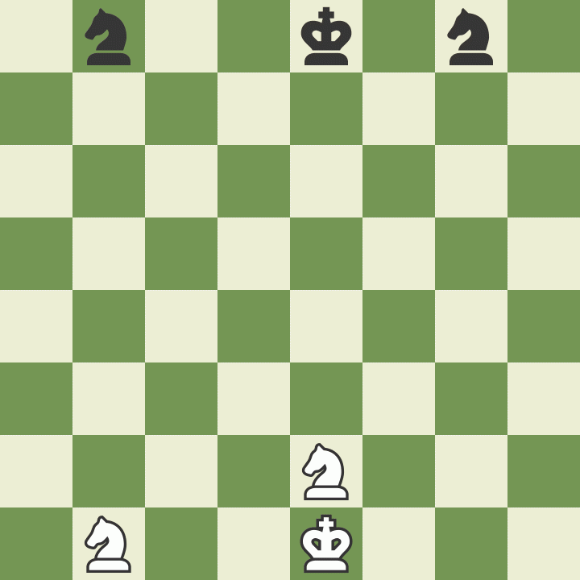

Mate in Three
Spreading the enjoyment of chess
one movent* at the time,
by Bruno Jacquet
*movent, noun, 1. that which moves anything, 2. blend of movement + event
The Seventh Seal, Ingmar Bergman, 1957
2001: A Space Odyssey, Stanley Kubrick, 1968
Libro de los Juegos, 1283
(It's not War) Just the end of Love, Manic Street Preachers, 2010
Superman, Action Comics 112, 1947
The Eight, Katherine Neville, 1988
Game of Chess, Girolamo da Cremona, 1480

The Chess Players, Honoré Daumier, 1865

Spectre, Sam Mendes, 2015
Artists Sister Playing Chess, Sofonisba Anguissola, 1555
Bratislava, Slovakia
The Chess Players, John Lavery, 1929

Prague, Check Republic

Casablanca, Michael Curtiz, 1942

X-Men - First Class, Matthew Vaughn, 2011
Lolita, Stanley Kubrick, 1962
Part I - the pieces
https://www.chess.com/analysis-board-editorKing

Queen

Rook

Bishop

Knight
Pawn

Part II - the 🇨🇿mate
My approach method
- Find the opponent King
- Identify our best pieces
- Visualize the threat
- Anticipate King's defence
Part III - your move
Thank You!
Mate in Three, by Bruno Jacquet
Slides (also) available at
bjacquet.github.io/extras/mate-in-three